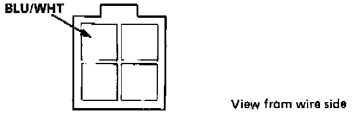
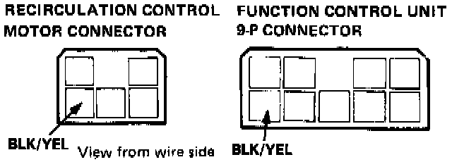
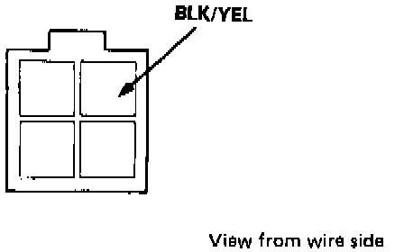

Blower Motor Does Not Run at All
HEATER ELECTRICAL TROUBLESHOOTINGNOTE:
- Use the digital Multimeter KS-AHM-32-O03 to check.
- Before testing, check the No. 22, 24 and 26 fuses (engine compartment) and No. 16 fuse (under dash fuse box). All tests for voltage or motor operation are with the Ignition ON. If components check OK, the problem is in the wiring.
Symptom: Blower motor does not run at all.

1. Check for battery voltage to the [1][2]blower motor relay at the BLU/WHT terminal of the 4-P connector.

2. Check for battery voltage at the BLK/YEL terminals of the function control unit connector and the recirculation control motor connector.

3. Check for battery voltage at the Bl/Y terminal of the [1][2]blower motor relay and blower HI relay connectors.

4. Ground the BLU/BLK terminal on the blower HI relay, the blower motor should run.
- If it runs, the blower HI relay is possibly faulty.

- If it does not run, check the [1][2]blower motor relay in the same way by attaching a jumper wire between its BLU/WHT and BLU/WHT terminals.
- If both relay checks are OK and the motor still does not run, ground the BLU/BLK terminal of the blower motor. If the motor does not run, replace it.